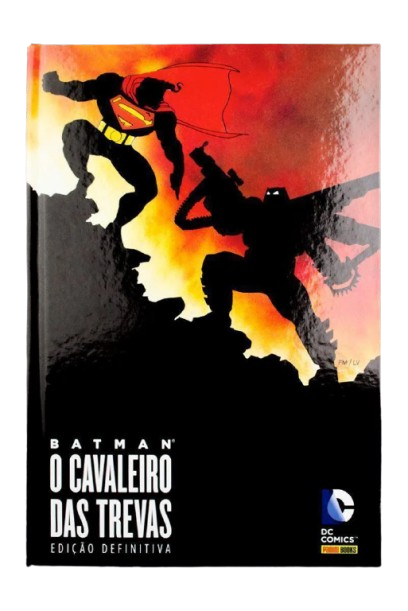

Recomendações de Leitura
HQ's | Batman

Batman Ano Um - Frank Miller
Batman Cavaleiro das Trevas - Frank Miller

Batman Longo Dia das Bruxas Parte 1 - Jeph Loeb

Batman Longo Dia das Bruxas Parte 2 - Jeph Loeb
Aventura e Fantasia | JRR. Tolkien
Batman Ano Um - Frank Miller
Batman Cavaleiro das Trevas - Frank Miller
Batman Longo Dia das Bruxas Parte 1 - Jeph Loeb